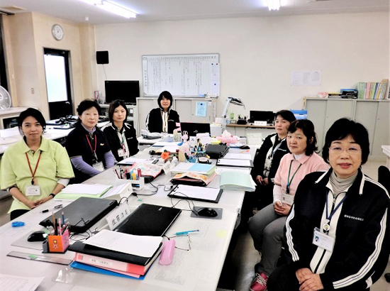
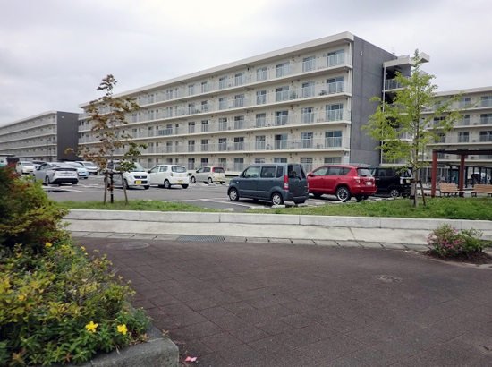

被災地のいま 宮城県・福島県の現状
3.11を忘れない・・
みやぎ生協から被災地・宮城のいまをお伝えします
第71回 2019年7月5日 ―まち・住まい・コミュニティ―
ついの住処、仮の住まい
どの被災者にも地域で安心して生活できる環境を
福島県南相馬市社会福祉協議会
「様子を伺いに訪問したら、“10日ぶりに人と喋った”という方がいました」。
黒木洋子さん（南相馬市社会福祉協議会生活支援相談室長）は、孤立しがちな被災者の現状について、そう語ります。
「南相馬市内の復興公営住宅はどこもまだ自治会がありません。住民同士の自発的なコミュニティ形成もなかなか進まなくて…」。
県営の復興公営住宅には、原発事故で南相馬市に避難してきた浪江町や双葉町など他町村の人たちが多く入居しています。
故郷のほとんどが居住制限区域や帰還困難区域になっていることから、南相馬市をついの住処と決めて家を建てた人がいる一方で、「ここは仮の住まい。いつかは故郷に戻る」と思っている人もいます。
避難して8年が経ちますが、暮らしはまだ流動的で、新たなコミュニティをつくる雰囲気も環境も整ってないのが現実です。
「自治会がないと困るのは被災者です。避難先で話し相手がなく孤立する。どこに誰が住んでいるか把握できず、ニーズが埋もれてしまう。私たちの被災者支援活動も復興が進むにつれて形を変えていきます。“住民だけでは何もできない”とならないよう、自治会立ち上げを支援し、様々なイベントを通して、コミュニティを育んでいきたい」。
被災者が地域で安心して生活できるように支援するのが、黒木さんたち生活相談支援室の仕事です。
「世帯分離や地域分断から来る寂しさ、外出機会の減少、高齢者の身体機能の低下。支えなければならないことがたくさんあります」。
なかでも黒木さんたちが今、気になっているのが、生活困窮に陥りそうな人たちの存在です。
「50代、60代のちょうど働き盛りの方々。勤務先が原発事故で移転・撤退し、失業。新たな職を得ても頭と体が追い付かず、心が折れてまた働き口を失う。賠償金も底を突く。免除されていた家賃や税金も払うようになる。そうなったらどうやって生活していくのか。注意して見守っていかなければと思っています」。
「原発事故が課題を深く複雑なものにしている」と黒木さん。そうした背景を踏まえながら「地域ごとの課題をどう解決していくかが、私たちの次の課題」と、前向きな笑顔を見せます。

▲南相馬市社会福祉協議会生活相談室の皆さん。向かって右一番手前が室長の黒木洋子さん。「職員はつねに被災者に気持ちを寄せている。それだけに、被災者を支援する職員の心のケアも大事だと思っています」。

▲県の復興公営住宅は市内に5カ所。棟ごとに管理人と呼ばれる住民の代表がいて、サロンや趣味の活動などに熱心
2019年3月21日、みやぎ生協はコープふくしま・福島県南生協と組織合同しました。このコーナーのタイトルも「被災地のいま みやぎ生協・コープふくしまから宮城・福島のいまをお伝えします」に変え、福島県の現状についてもお伝えしていきます。
前の記事
第70回「―まち・住まい・コミュニティ― 「多様なチャンネルを活用して、居場所を見つけられる街に」 宮城県東松島市野蒜(のびる)まちづくり協議会」（2019年6月5日）